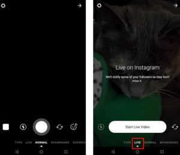
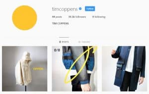

Interested in Instagram live? You should be.
Live video is bigger than ever.
It started with Facebook Live, giving companies a chance to connect with their customers through raw, authentic video content.
As people reacted positively to the arrival of this new concept, other social media channels followed suit, giving users the option to broadcast whenever, and whatever they wanted. These days, around 80% of consumers say that they’d rather watch a live video from a company than read a blog.
Live video is an excellent way to show your customers your genuine side with authentic, unedited material. Additionally, because live videos can only be “live” for a certain amount of time, they encourage feelings of “FOMO” in your audience. In other words, people don’t want to miss out on being part of the “in” crowd, so they’re more likely to join in.
Here’s everything you need to know about how to go live on Instagram.

The Benefits of Using Instagram Live for Your Business
Before we start covering the basics of how to use Instagram live, let’s take a look at the reasons why you’d want to use this feature, to begin with.
After all, you’ve probably already spent months getting used to Instagram videos and Instagram Stories, adding yet another thing to your strategy is no simple feat.
Ultimately, Instagram Live is an excellent way to boost discoverability and engagement online. It delivers the benefits of video marketing, like 66% more qualified leads per year, along with opportunities to improve customer/brand relationships.
Like Instagram Stories and standard Insta posts, the more engagement you encourage with your content, the more likely it is that you’ll end up on the Instagram Explore page – which means that you connect with a wider number of people.
Starting an Instagram live video campaign can:
- Improve your visibility: It’s often difficult to manipulate the Instagram algorithm in a way that gets you plenty of attention from your target audience. However, Instagram Live sends push notifications to anyone that follows your account, improving your chances of interaction.
- Increase engagement levels: Instagram Live brings followers closer to you by allowing you to respond to their questions and comments in real-time. It’s the closest your followers can come to having a face-to-face conversation with you.
- Develop brand loyalty: The connections you make through Instagram Live will help to strengthen the relationships that customers have with your company. These relationships improve your chances of brand loyalty too.
Starting an Instagram Live Video: The Basics
Now let’s get to how to go live on Instagram.
Starting an Instagram Live video is simpler than you’d think.
Open your Instagram app and click on the camera in the top left corner. You can also access the camera feature by swiping right. Here, you’ll be able to visit the “Stories” section of Instagram, which comes with a carousel at the bottom of the page with words like “Boomerang,” “Normal” “Rewind,” and “Hands-free.” What you want is “Live.”
When you reach “Live” you’ll see a big white button, but you don’t need to tap on that until you’re ready to start live streaming. You’ll also be able to switch out which camera you’re using by tapping the arrows to the right side of the button.
Before you move forward with starting an Instagram live video, check your Instagram stories settings. This will help you to outline whether you want to hide your live videos from specific people and if you want to save your video after it’s done.
Keep in mind that Instagram only gives you a 3-second countdown before launching your Livestream. That means that you need to be ready to start recording straight away.
Your broadcast will be limited to one hour, but you’ll have to keep an eye on your data and battery life limitations with your smartphone too.
Managing your Instagram Live Broadcast
One of the great things about Instagram Live is that as soon as you go live, all of your followers and friends will be instantly informed with a pop-up notification. They’ll also be able to see a “Live” badge on your profile picture at the top of their Instagram feed.
The more you learn about how to go live on Instagram, the easier it will be to adjust your broadcasting strategy to give you the best possible return on investment. However, when you’re just beginning, it’s a good idea to keep the following things in mind:
- You can control your viewers: If you don’t want everyone to get a pop-up notification when you go Live, you can hide your video from specific users. Go into your profile settings and select “Story Settings.” Tap on “Hide Story From” to choose who you don’t want to see your live videos.
- Moderating comments is easy: If you’d rather avoid having inappropriate words popping up in the comments section, you can turn on comment moderation. However, this isn’t a good idea if you want to get a lot of engagement for your brand.
- See who’s watching: Remember that you can keep an eye on who’s tuning into your Instagram live broadcast by tapping on the eye icon at the top left-hand corner of your screen. If you start to notice the same viewers tuning in every time, give them a shout-out on your next broadcast to show how much you appreciate them.
How to Go Live on Instagram: Creating a Strategy
Understanding how to go Live on Instagram successfully isn’t just about knowing how to use the feature. You’ll also need a strategy in place to make sure that you’re getting the most out of your broadcasts. After all, like any other Instagram feature, Live requires careful planning if you’re going to use it correctly.
Here are some of the ways you can make the most out of Instagram Live.
1. Know the Purpose of your Instagram Live Broadcast
Every piece of content you share online, whether it’s a live video, a blog, or just a picture on Instagram, needs to have a purpose. With that in mind, think carefully about why you’re going to be using Live in the first place. Some of the best ways to take advantage of this feature include:
- Revealing new products: Build up anticipation for new arrivals in your portfolio, then broadcast your big-reveal in real-time.
- Go behind the scenes: Help people get to know your company a little better with authentic behind-the-scenes content. You could even introduce them to other members of your team.
- Interview a special guest: Reach out to partners and influencers in your industry that would be interested in creating a video with you.
- Run a Q&A: Answer any pressing questions that your customers have about your product or service with a question and answers session.
- Ask for feedback: Talk about a new product or service with your customers and ask them to give you their honest opinion.
- Share a tutorial: If your followers are always asking for help on figuring out how to make the most of your product or service, give them some guidance with a tutorial.
Brainstorm a few different ideas at once when you’re planning on doing an Instagram Live broadcast, and you’ll make sure that you always have a range of options to choose from.
2. Make Sure that You’re Prepared
Starting an Instagram Live video campaign can be a daunting and nerve-wracking experience. Make sure that you’re ready by getting yourself prepared. Live videos are often more worrisome than most forms of video content because there’s always a chance that you can fumble something, trip over your words, or make a mistake that you can’t simply edit out.
Mistakes in your stream won’t necessarily be the end of the world for your company. Remember that people are looking for evidence that you’re a genuine and authentic brand. However, it’s worth practicing your video script beforehand and looking for anything you can improve. For instance:
- Can you change the background to something more professional?
- Is your audio clear, and does your image look great?
- Are you comfortable with your topic, or do you need to do more research?
- Are your lighting and camera angles adequately established?
3. Promote your Instagram Live Streams in Advance
It’s important to remember that you’re not just using Instagram Live for the sake of it – you’re trying to boost engagement and get more followers for your brand. With that in mind, you need to ensure that people are anticipating your stream, so you have the best chances of a good turnout.
Think about how you can promote your broadcast before it’s going to happen. For instance, can you share Instagram Stories that tell people about what you’re going to cover in your video? What about posting pictures on your Instagram feed with plenty of hashtags to improve your chances of making it to the Explore page?
Some people even find that it’s helpful to promote their upcoming Instagram Live broadcast on other channels, particularly if they have more followers on other social profiles. If you’re just getting started with Instagram, sharing news about your broadcast on your website, or Facebook might lead to a better viewer count.
4. Use FOMO to Your Advantage
As mentioned above, one of the best things about Instagram Live broadcasts is that they only last for a short period. They’re not going to be around forever, and that means that you have a great opportunity to take advantage of your customer’s “Fear of Missing Out”. FOMO is a common part of many marketing strategies today.
To use FOMO in your Instagram live videos, ask yourself what you can do to get people hyped about viewing your content as it happens. For instance:
- Can you announce exclusive news that people can’t get anywhere else? People love feeling like they’re the first to be in the know.
- Could you offer one-time-only promotional codes that only last for the length of your Livestream? This is a fantastic way to convince your audience that they should always attend your streams.
- Will you be able to show your audience something they can’t see elsewhere? For instance, designer Tim Coppens once used Instagram Live to showcase a new menswear collection before it launched online.

5. Follow up After your Video
Finally, remember that starting an Instagram live video isn’t the only thing you need to think about if you want to be successful. You also need to know how to end your videos too. For instance, when the broadcast is finished, make sure that you tap the Save button to add the content to your library. This will mean that you can go back and learn from your broadcast later.
It’s also a good idea to check out your Live metrics, so you can figure out when people gained and lost interest in your video. This will help you to plan your future streams. Consider taking a screenshot of the metrics presented by Instagram Live so that you can use them later.
Additionally, remember to create a post-live Instagram story or Post to let people who didn’t make the stream know what they missed out on. You can also encourage them to hit the follow button and turn on push notifications, so they don’t miss your next broadcast.
Ready to Go Live?
Instagram is one of the most exciting and user-friendly platforms available for brands today. If you’re looking for a way to increase engagement for your company and drive attention to your organization, then you can’t go wrong with Instagram.
The Instagram Live feature is just another item in your toolkit that you can use to connect with your audience and boost your chances of long-term success. With the tips above, you should have everything you need to dive into starting an Instagram live video with confidence.
Remember, stick with us here at SocialFollow for more tips and guidance on how to make the most of your Instagram strategy.
You May Also Like: A Complete Guide To Instagram Collections And Great Ways To Use Them


1 Comment